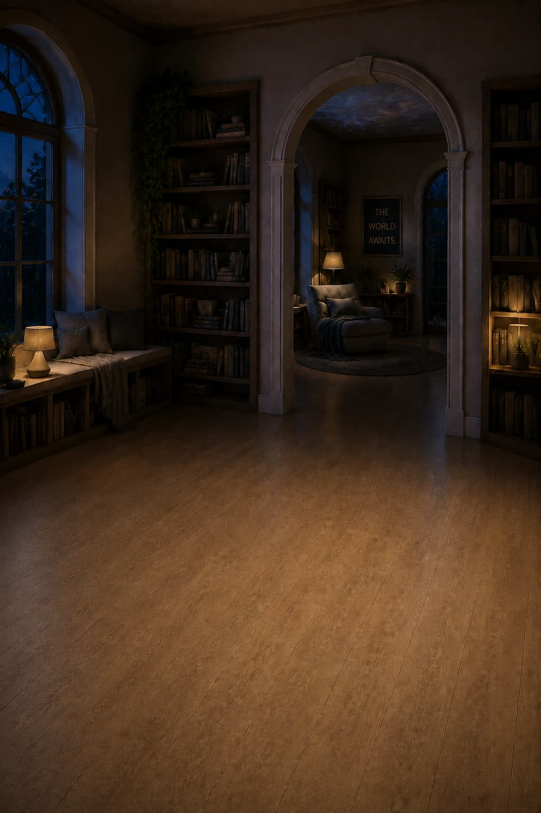
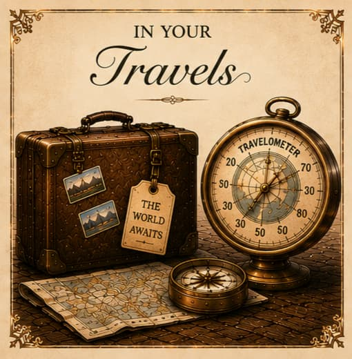
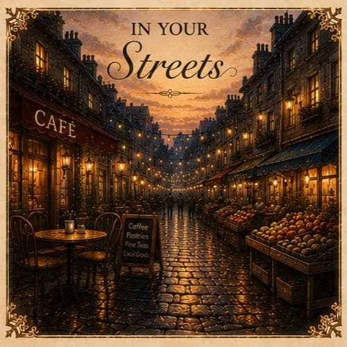
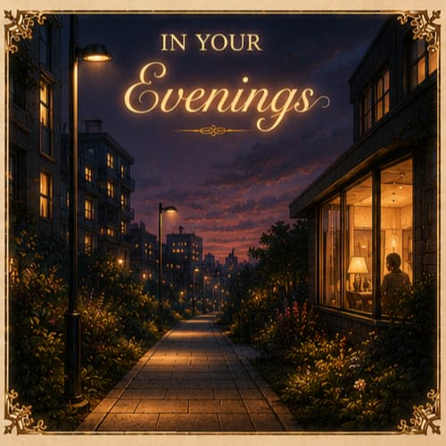

The world without leaving your chair.
The atlas of where you've been.
The Atlas Wing is a sanctuary of sensory transport. Sit in your chair and travel through looping audiovisual atmospheres of places real and remembered — firesides, skies, wild landscapes, ocean coastlines, evening hours. The Tripometer below traces the world's movements and keeps your own private atlas.


